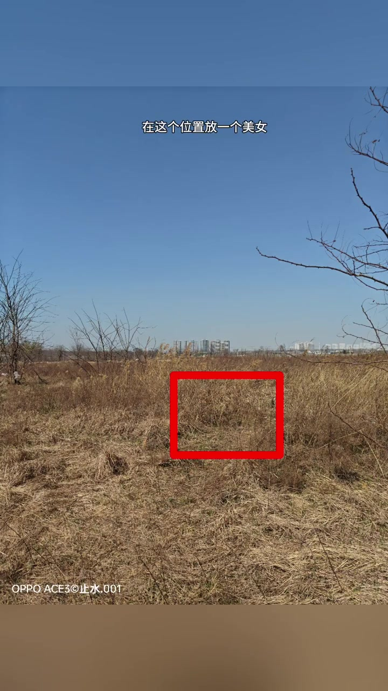
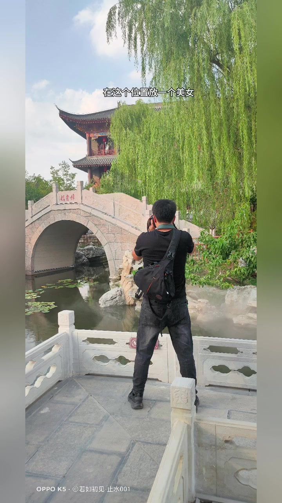
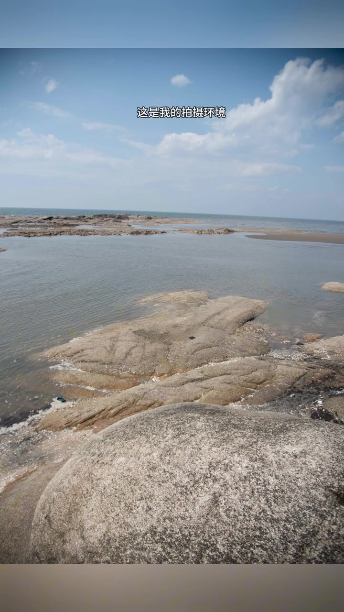
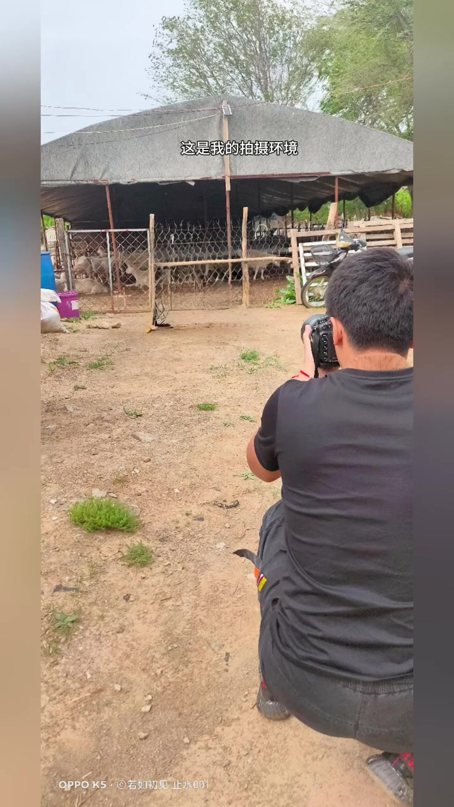
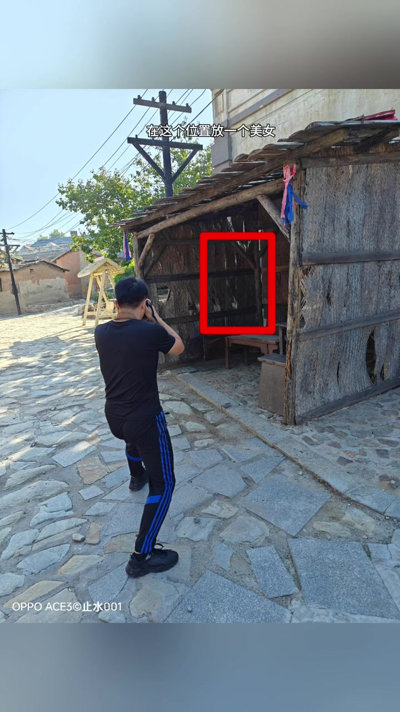
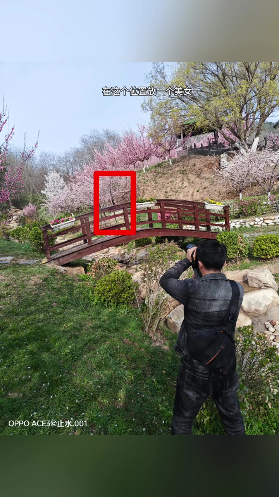
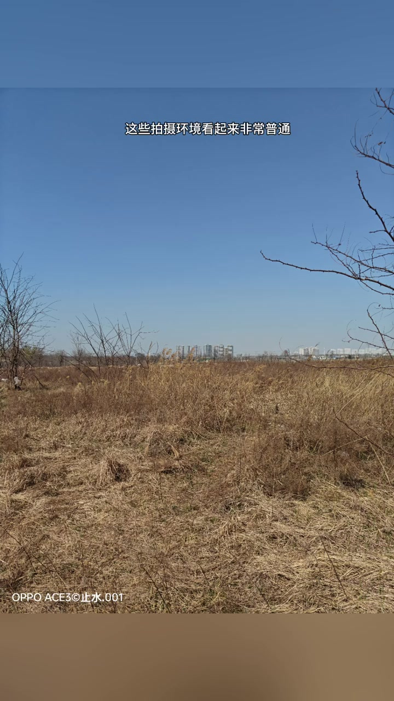
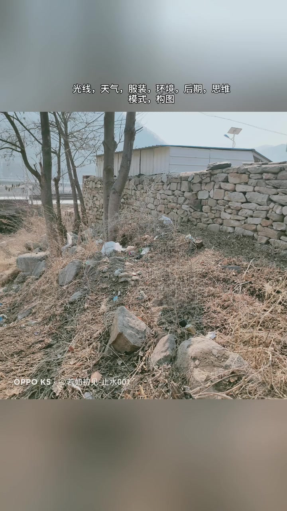

荒草地开场：在这个位置放一个美女
视频标题写的是「环境越差，照片越唯美」。开场却先甩出一片干黄荒草、远处城市天际线，画面叠字「在这个位置放一个美女」，红框圈住草地正中一块空地——不是先秀成片，而是先坦白：我要拍的地方，长这样。
「这是我的拍摄环境 在这个位置放一个美女」
说明：前半段口播几乎全程重复同一句，靠画面切换推进；Whisper 分段按原识别保留。笔记文案补充：很多新手爱挑「高大上」环境，反而普通场景常有意外收获。作者署名可见「止水 / 若如初见-止水001」类水印。


普通环境轮播：海边、羊圈、空地
节奏很快：海边礁石、羊圈棚下、树荫空地……每换一处，字幕仍是「这是我的拍摄环境 / 在这个位置放一个美女」。作者刻意把「环境看起来不怎么样」这件事重复打进观众耳朵里，让后面的总结有对照物。


更「差」的现场：茅屋、石滩、乱坡
后半段继续加压：茅草棚门口、海岸石滩红框、乱石坡与石墙小屋。口播句式不变，画面越来越「不像网红景点」。信息很清楚——取景标准不是「够不够高级」，而是「这里能不能站人、光与背景能不能成片」。
「这是我的拍摄环境 在这个位置 放一个美女」

花海桥边仍是同句：环境只是底座
即便切到粉白花树、木桥、远处亭阁这类更「好看」的景，作者仍用红框标位，口播不改。穿插老巷黑门、石墙空地、花树下茶席石台、河岸涵洞等，把「环境」从景点审美拉回拍摄操作：先定点，再谈成片。

成片对照：总结从这里拐弯
约 01:22 起，画面换成汉服女孩倚栏执扇的成片，字幕「最后我们来总结一下」。紧接着口播点题：这些拍摄环境看起来非常普通，甚至很容易被忽视。前一分多钟的「差环境轮播」，是为这句话铺路。
「最后我们來总结一下」「这些拍摄环境看起来非常普通」「甚至很容易被忽視」

器材迷思 vs 真正该关注的事
作者转向劝诫：想拍出好作品，不要过分关注相机和镜头。很多新手刚入门会浪费大量时间讨论相机品牌、做工、参数、型号、手感、对焦、像素、锐度、色彩——这些本来是相机厂家该研究的；并不是有了高档相机就能拍出好照片。
「如果你想拍出好作品 不要過分的關注相機和鏡頭」
真正该练的清单被快速念出：光线、天气、服装、环境、后期、思维模式、构图、拍摄时机、引导模特。「这些知识，才是我们真正应该关注的。」画面仍停在那片乱石坡「差环境」上，用反差把论点钉死。
Whisper 将「做工」等识别为「延遲做工」等繁简混写；叙述按语境校正用词，完整原始分段见文末转录。
